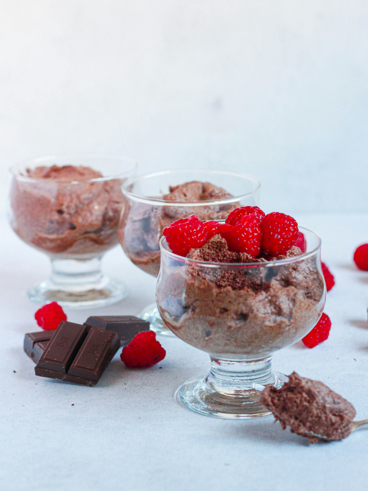
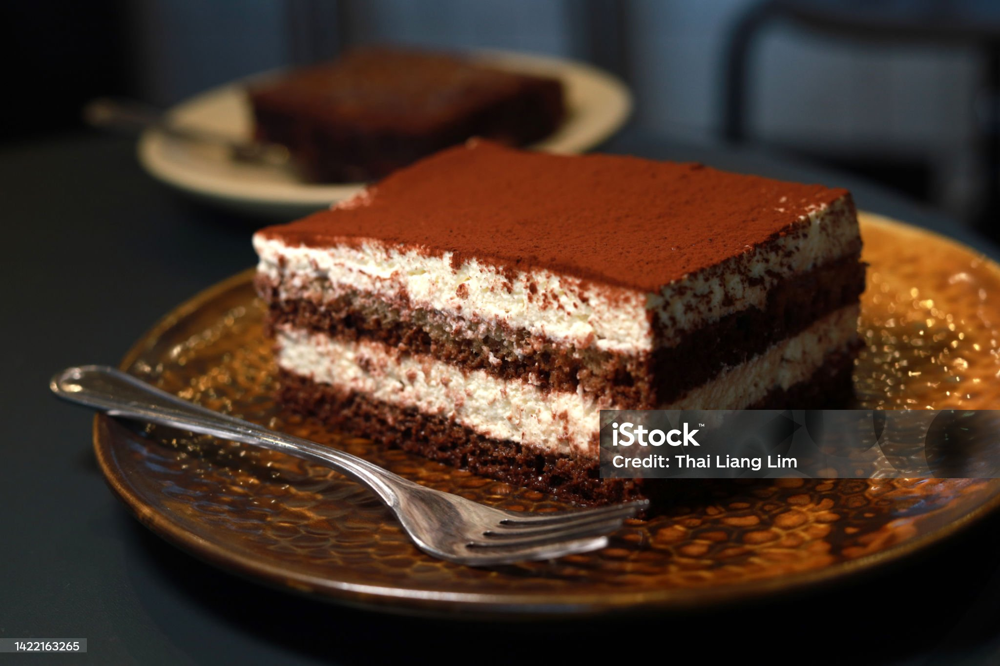

A rich and velvety dessert made with melted chocolate, whipped cream, and eggs. Light, airy, and irresistibly smooth, it's the perfect sweet treat for any occasion!
Chocolate mousse is the ultimate indulgence—a velvety, airy dessert that combines the richness of chocolate with a light, fluffy texture. Perfect for special occasions or a sweet treat after a meal, this mousse is surprisingly easy to make and always a hit.
Break the dark chocolate into small pieces and melt it either in a heatproof bowl over a pot of simmering water (double boiler method) or in the microwave in 30-second intervals. Stir until smooth and fully melted. Let it cool slightly.
In a clean bowl, beat the egg whites with a pinch of salt using an electric mixer on medium-high speed until soft peaks form. Gradually add the granulated sugar and continue beating until stiff peaks form. Set aside.
In another bowl, whisk the egg yolks with the vanilla extract until smooth and slightly pale in color.
Slowly add the melted chocolate into the egg yolk mixture, stirring gently to combine.
In a separate bowl, beat the heavy cream until it forms soft peaks. Carefully fold the whipped cream into the chocolate mixture until smooth and well incorporated.
Gently fold the whipped egg whites into the chocolate mixture in three batches. Be careful not to deflate the mousse—use a light hand to maintain its airy texture.
Spoon the mousse into serving glasses or bowls and refrigerate for at least 2 hours, or until set.
Garnish: Before serving, top with whipped cream and garnish with chocolate shavings or a dusting of cocoa powder, if desired.

Tiramisu is a decadent Italian dessert that layers coffee-soaked ladyfingers with a rich mascarpone cream. Finished off with a dusting of cocoa powder, this dessert is a perfect balance of flavors—sweet, creamy, and slightly bitter from the coffee.
Serving size: 10
Tiramisu Recipe Description: Tiramisu is a classic Italian dessert made with layers of coffee-soaked ladyfingers and a creamy mascarpone mixture. It’s simple to prepare and perfect for any occasion.
Ingredients: Coffee mixture: 2 cups coffee, 2 tbsp coffee liqueur (optional), 1 tbsp sugar (optional) Mascarpone mixture: 4 egg yolks, 1 cup sugar, 1 tsp vanilla, 1 ¼ cups mascarpone, 1 cup heavy cream, ¼ cup powdered sugar Assembly: 1 pack ladyfingers, cocoa powder (for dusting) Instructions: Brew coffee: Brew 2 cups of strong coffee, then cool. Make mascarpone mixture: Whisk egg yolks and sugar, heat over simmering water. Add vanilla and fold in mascarpone. Whip cream: Whip heavy cream with powdered sugar until stiff peaks form. Fold into mascarpone mixture. Assemble: Dip ladyfingers into coffee mixture and layer in a dish. Spread half the mascarpone mixture on top. Repeat layers. Chill: Refrigerate for at least 4 hours (overnight for best results). Serve: Dust with cocoa powder before serving.
=======
⏱ Chill Time: 4 hours (or overnight)
🍽 Servings: 8-10
🍽 Serving Size: 10
